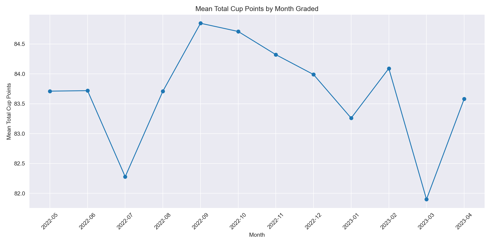

# Install the packages directly if needed with pip
# Check the repo's README below for more information
!pip install numpy pandas scipy matplotlib seaborn statsmodels scikit-learn jupyterWalkthroughs and Exercises for Fundamentals of Statistics with Python
import pandas as pd
# Display all columns
pd.set_option('display.max_columns', None)
# Display all outputs from each cell
from IPython.core.interactiveshell import InteractiveShell
InteractiveShell.ast_node_interactivity = "all"Week 1
Walkthrough 1.1: Getting Started
Setting Up the Python Environment
If you haven’t already installed Python, Jupyter, and the necessary packages, there are instructions on the course repo in the README to do so here.
If you aren’t able to do this on your machine, you may want to check out Google Colab. It’s a free service that allows you to run Jupyter notebooks in the cloud. Alternatively, I’ve set up some temporary notebooks on Binder ( ) that you can work with online as well.
) that you can work with online as well.
# Importing libraries/modules and aliasing them as needed
import numpy as np
import pandas as pd
import scipy.stats as stats
import matplotlib.pyplot as plt
import seaborn as sns
import statsmodels.api as sm
from sklearn.preprocessing import MinMaxScaler, StandardScalerExploring a dataset
# Load in the dataset
data_dev_survey = pd.read_csv("data_dev_survey.csv")# Display information about the DataFrame
data_dev_survey.info()<class 'pandas.core.frame.DataFrame'>
RangeIndex: 1183 entries, 0 to 1182
Data columns (total 24 columns):
# Column Non-Null Count Dtype
--- ------ -------------- -----
0 response_id 1183 non-null int64
1 work_as_dev 1183 non-null object
2 age 1183 non-null object
3 employment 1183 non-null object
4 remote_work 1183 non-null object
5 coding_activities 1182 non-null object
6 ed_level 1183 non-null object
7 dev_type 1183 non-null object
8 years_code 1182 non-null float64
9 years_code_pro 1183 non-null int64
10 org_size 1183 non-null object
11 country 1183 non-null object
12 language_have_worked_with 1183 non-null object
13 language_want_to_work_with 1116 non-null object
14 op_sys_professional_use 1110 non-null object
15 ai_view 1183 non-null object
16 ai_trust 1183 non-null object
17 ic_or_manager 1183 non-null object
18 work_exp 1183 non-null int64
19 industry 949 non-null object
20 us_or_not 1183 non-null object
21 plans_to_use_ai 1183 non-null object
22 converted_comp_yearly 1183 non-null int64
23 survey_completion_date 1183 non-null object
dtypes: float64(1), int64(4), object(19)
memory usage: 221.9+ KBPerforming basic statistical functions using NumPy, Pandas, and SciPy.
Using NumPy
# Calculate the mean of the years_code_pro column
np.mean(data_dev_survey['years_code_pro'])np.float64(7.961115807269653)# Calculate the median of the work_exp column
np.median(data_dev_survey['work_exp'])np.float64(7.0)# Calculate the standard deviation of the converted_comp_yearly column
np.std(data_dev_survey['converted_comp_yearly'])np.float64(81861.24268446874)Using Pandas
# Display summary statistics on the numeric columns of the DataFrame
data_dev_survey.describe() response_id years_code years_code_pro work_exp \
count 1183.000000 1182.000000 1183.000000 1183.000000
mean 43949.774303 12.534687 7.961116 9.650042
std 25327.979423 8.384094 7.153751 8.189750
min 164.000000 1.000000 0.000000 0.000000
25% 22733.000000 7.000000 3.000000 4.000000
50% 43305.000000 10.000000 6.000000 7.000000
75% 65791.000000 16.000000 10.000000 13.000000
max 89072.000000 50.000000 50.000000 48.000000
converted_comp_yearly
count 1.183000e+03
mean 9.068442e+04
std 8.189586e+04
min 3.000000e+00
25% 4.159300e+04
50% 7.271400e+04
75% 1.200000e+05
max 1.200000e+06 Using SciPy
# Separate the data into two groups
using_ai = data_dev_survey[data_dev_survey['plans_to_use_ai'] == 'Using']\
['converted_comp_yearly']
plan_to_use_ai = data_dev_survey[data_dev_survey['plans_to_use_ai'] == 'Plan to use']\
['converted_comp_yearly']
# Perform the t-test
t_stat, p_value = stats.ttest_ind(using_ai, plan_to_use_ai, equal_var=False)
# Print the results
print(f"T-statistic: {t_stat}")T-statistic: 0.9293366153676751print(f"P-value: {p_value}")P-value: 0.3529304815725288Exercise 1.1: Getting Started
Setting Up the Python Environment
If you ran the # Importing libraries and aliasing them code above, you should be good to proceed here. If not, scroll up and run it.
Exploring a dataset
# Load in the coffee_quality dataset
coffee_quality = pd.read_csv("coffee_quality.csv")# Display information about the DataFrame
coffee_quality.info()<class 'pandas.core.frame.DataFrame'>
RangeIndex: 207 entries, 0 to 206
Data columns (total 30 columns):
# Column Non-Null Count Dtype
--- ------ -------------- -----
0 country_of_origin 207 non-null object
1 continent_of_origin 207 non-null object
2 farm_name 205 non-null object
3 lot_number 206 non-null object
4 mill 204 non-null object
5 company 207 non-null object
6 altitude 206 non-null object
7 region 205 non-null object
8 producer 206 non-null object
9 in_country_partner 207 non-null object
10 harvest_year 207 non-null object
11 grading_date 207 non-null object
12 owner 207 non-null object
13 variety 201 non-null object
14 processing_method 202 non-null object
15 aroma 207 non-null float64
16 flavor 207 non-null float64
17 aftertaste 207 non-null float64
18 acidity 207 non-null float64
19 body 207 non-null float64
20 balance 207 non-null float64
21 uniformity 207 non-null float64
22 clean_cup 207 non-null int64
23 sweetness 207 non-null int64
24 overall 207 non-null float64
25 total_cup_points 207 non-null float64
26 moisture_percentage 207 non-null float64
27 color 207 non-null object
28 expiration 207 non-null object
29 certification_body 207 non-null object
dtypes: float64(10), int64(2), object(18)
memory usage: 48.6+ KBPerforming basic statistical functions using NumPy, Pandas, and SciPy.
Using NumPy
# Calculate the mean of the aroma column
np.mean(coffee_quality['aroma'])np.float64(7.721062801932368)# Calculate the median of the total_cup_points column
np.median(coffee_quality['total_cup_points'])np.float64(83.75)# Calculate the standard deviation of the moisture_percentage column
np.std(coffee_quality['moisture_percentage'])np.float64(1.2444515707780472)Using Pandas
# Display summary statistics on the numeric columns of the DataFrame
coffee_quality.describe() aroma flavor aftertaste acidity body balance \
count 207.000000 207.000000 207.000000 207.00000 207.000000 207.000000
mean 7.721063 7.744734 7.599758 7.69029 7.640918 7.644058
std 0.287626 0.279613 0.275911 0.25951 0.233499 0.256299
min 6.500000 6.750000 6.670000 6.83000 6.830000 6.670000
25% 7.580000 7.580000 7.420000 7.50000 7.500000 7.500000
50% 7.670000 7.750000 7.580000 7.67000 7.670000 7.670000
75% 7.920000 7.920000 7.750000 7.87500 7.750000 7.790000
max 8.580000 8.500000 8.420000 8.58000 8.250000 8.420000
uniformity clean_cup sweetness overall total_cup_points \
count 207.000000 207.0 207.0 207.000000 207.000000
mean 9.990338 10.0 10.0 7.676812 83.706570
std 0.103306 0.0 0.0 0.306359 1.730417
min 8.670000 10.0 10.0 6.670000 78.000000
25% 10.000000 10.0 10.0 7.500000 82.580000
50% 10.000000 10.0 10.0 7.670000 83.750000
75% 10.000000 10.0 10.0 7.920000 84.830000
max 10.000000 10.0 10.0 8.580000 89.330000
moisture_percentage
count 207.000000
mean 10.735266
std 1.247468
min 0.000000
25% 10.100000
50% 10.800000
75% 11.500000
max 13.500000 Using SciPy
# Focus on only Asia and North America entries
# Separate the data into two groups
asian = coffee_quality\
[coffee_quality['continent_of_origin'] == 'Asia']\
['total_cup_points']
north_american = coffee_quality\
[coffee_quality['continent_of_origin'] == 'North America']\
['total_cup_points']
# Perform the t-test
t_stat, p_value = stats.ttest_ind(asian, north_american, equal_var=False)
# Print the results
print(f"T-statistic: {t_stat}")T-statistic: 2.5481369690475355print(f"P-value: {p_value}")P-value: 0.011898171131418231Walkthrough 1.2: Data Summarizing
Compute and interpret measures of central tendency
# Calculate center statistics for years_code_pro
data_dev_survey['years_code_pro'].mean()np.float64(7.961115807269653)data_dev_survey['years_code_pro'].median()np.float64(6.0)data_dev_survey['years_code_pro'].mode()0 2
Name: years_code_pro, dtype: int64# To extract just the value for mode
data_dev_survey['years_code_pro'].mode()[0]np.int64(2)Compute and interpret measures of variation
# Calculate spread statistics for years_code_pro
range_years_code_pro = data_dev_survey['years_code_pro'].max() \
- data_dev_survey['years_code_pro'].min()
range_years_code_pronp.int64(50)data_dev_survey['years_code_pro'].var(ddof=1)np.float64(51.17615171500372)data_dev_survey['years_code_pro'].std(ddof=1)np.float64(7.153750884326607)# Calculate the five-number summary for 'years_code_pro'
min_years_code_pro = data_dev_survey['years_code_pro'].min()
q1_years_code_pro = data_dev_survey['years_code_pro'].quantile(0.25)
median_years_code_pro = data_dev_survey['years_code_pro'].median()
q3_years_code_pro = data_dev_survey['years_code_pro'].quantile(0.75)
max_years_code_pro = data_dev_survey['years_code_pro'].max()
# Print them out
print(f"Five-Number Summary for years_code_pro:")Five-Number Summary for years_code_pro:print(f"Minimum: {min_years_code_pro}")Minimum: 0print(f"First Quartile (Q1): {q1_years_code_pro}")First Quartile (Q1): 3.0print(f"Median (Q2): {median_years_code_pro}")Median (Q2): 6.0print(f"Third Quartile (Q3): {q3_years_code_pro}")Third Quartile (Q3): 10.0print(f"Maximum: {max_years_code_pro}")Maximum: 50Exercise 1.2: Data Summarizing
# Calculate center statistics for 'aroma'
mean_aroma = coffee_quality['aroma'].mean()
median_aroma = coffee_quality['aroma'].median()
mode_aroma = coffee_quality['aroma'].mode()[0]
print(f"Mean of aroma: {mean_aroma}")Mean of aroma: 7.721062801932368print(f"Median of aroma: {median_aroma}")Median of aroma: 7.67print(f"Mode of aroma: {mode_aroma}")Mode of aroma: 7.67# Calculate spread statistics for 'aroma'
range_aroma = coffee_quality['aroma'].max() - coffee_quality['aroma'].min()
variance_aroma = coffee_quality['aroma'].var(ddof=1) # Sample variance
std_dev_aroma = coffee_quality['aroma'].std(ddof=1) # Sample standard deviation
print(f"Range of aroma: {range_aroma}")Range of aroma: 2.08print(f"Variance of aroma: {variance_aroma}")Variance of aroma: 0.08272896205618872print(f"Standard Deviation of aroma: {std_dev_aroma}")Standard Deviation of aroma: 0.2876264279515857# Calculate the five-number summary for 'aroma'
min_aroma = coffee_quality['aroma'].min()
q1_aroma = coffee_quality['aroma'].quantile(0.25)
median_aroma = coffee_quality['aroma'].median()
q3_aroma = coffee_quality['aroma'].quantile(0.75)
max_aroma = coffee_quality['aroma'].max()
print(f"Five-Number Summary for aroma:")Five-Number Summary for aroma:print(f"Minimum: {min_aroma}")Minimum: 6.5print(f"First Quartile (Q1): {q1_aroma}")First Quartile (Q1): 7.58print(f"Median (Q2): {median_aroma}")Median (Q2): 7.67print(f"Third Quartile (Q3): {q3_aroma}")Third Quartile (Q3): 7.92print(f"Maximum: {max_aroma}")Maximum: 8.58Walkthrough 1.3: Cleaning and Preparing Data with Pandas
# Histogram for years_code_pro
sns.histplot(data_dev_survey['years_code_pro']);
plt.title('Histogram of Years of Coding Experience');
plt.xlabel('Years of Coding Experience');
plt.ylabel('Frequency');# Set the default figure size for all plots (unless specified)
plt.rcParams['figure.figsize'] = (10, 5)# Box plot for work_exp
sns.boxplot(y=data_dev_survey['work_exp']);
plt.title('Box Plot of Work Experience');
plt.ylabel('Work Experience (years)');# Can also make it horizontal in orientation
sns.boxplot(x=data_dev_survey['work_exp']);
plt.title('Box Plot of Work Experience');
plt.xlabel('Work Experience (years)');# Scatter plot for years_code_pro vs. converted_comp_yearly
sns.scatterplot(x=data_dev_survey['years_code_pro'],
y=data_dev_survey['converted_comp_yearly']);
plt.title('Scatter Plot of Years of Coding Experience vs. Yearly Compensation');
plt.xlabel('Years of Coding Experience');
plt.ylabel('Yearly Compensation');Exercise 1.3: Cleaning and Preparing Data with Pandas
# Histogram for acidity
sns.histplot(coffee_quality['acidity']);
plt.title('Histogram of Coffee Acidity');
plt.xlabel('Acidity');
plt.ylabel('Frequency');# Box plot for body
sns.boxplot(y=coffee_quality['body']);
plt.title('Box Plot of Coffee Body');
plt.ylabel('Body');
plt.show()# Set the Seaborn style to 'darkgrid'
# This sets the color of the points to dark with a light grid background
sns.set_style("darkgrid")
# Scatter plot for body vs. acidity
sns.scatterplot(x=coffee_quality['body'], y=coffee_quality['acidity']);
plt.title('Scatter Plot of Body vs. Acidity');
plt.xlabel('Body');
plt.ylabel('Acidity');Walkthrough 1.4: Sampling Distribution Generation
# Think of our data as a population to draw from
population = data_dev_survey['converted_comp_yearly'].dropna().values
# Generate a large sample from the 'converted_comp_yearly' column
# Parameters
sample_size = 50
num_samples = 1000
# Set a seed to make code reproducible
np.random.seed(2024)
# Simulate sampling distribution of the mean
sample_means = []
for _ in range(num_samples):
sample = np.random.choice(population, sample_size)
sample_means.append(np.mean(sample))
# Plot the sampling distribution of the sample means
plt.hist(sample_means, bins=30, edgecolor='k', alpha=0.7);
plt.title('Sampling Distribution of the Mean (Sample Size = 50)');
plt.xlabel('Sample Mean');
plt.ylabel('Frequency');
plt.xticks(rotation=30);
# Adjust layout so labels are not cut off
plt.tight_layout();Exercise 1.4: Sampling Distribution Generation
# Think of our aroma data as a population to draw from
population = coffee_quality['aroma'].dropna().values
# Parameters
sample_size = 50
num_samples = 1000
# Set random seed
np.random.seed(2024)
# Simulate sampling distribution of the mean
sample_means = []
for _ in range(num_samples):
sample = np.random.choice(population, sample_size)
sample_means.append(np.mean(sample))
# Plot the sampling distribution of the sample means
plt.hist(sample_means, bins=30, edgecolor='k', alpha=0.7);
plt.title('Sampling Distribution of the Mean (Sample Size = 50)');
plt.xlabel('Sample Mean');
plt.ylabel('Frequency');
plt.xticks(rotation=30);
# Adjust layout so labels are not cut off
plt.tight_layout();Week 2
Walkthrough 2.1: Advanced Plots
# Select only numeric columns
numeric_columns = data_dev_survey.select_dtypes(include=[np.number])
# Calculate the correlation matrix for numeric columns
correlation_matrix = numeric_columns.corr()
# Heatmap for correlation matrix
plt.figure(figsize=(10, 8));
sns.heatmap(correlation_matrix, annot=True, cmap='coolwarm', fmt='.2f');
plt.title('Heatmap of Correlation Matrix');
# Pair plot for selected variables 'years_code_pro', 'work_exp', 'converted_comp_yearly'
plt.figure(figsize=(12, 8));
sns.pairplot(data_dev_survey,
vars=['years_code_pro', 'work_exp', 'converted_comp_yearly']);
plt.suptitle('Pair Plot of Selected Variables', y=1);# Time series plot
plt.figure(figsize=(12, 6));
data_dev_survey['survey_completion_date'] = \
pd.to_datetime(data_dev_survey['survey_completion_date'])
# Count the number of surveys completed each day
daily_counts = data_dev_survey['survey_completion_date'].value_counts().sort_index()
# Plot the counts as a line chart
plt.figure(figsize=(12, 6));
plt.plot(daily_counts.index, daily_counts.values, marker='o');
plt.title('Number of Surveys Completed Each Day in May 2023');
plt.xlabel('Day Completed');
plt.ylabel('Number of Surveys');
plt.xticks(rotation=30);
plt.grid(True);
Exercise 2.1: Advanced Plots
# Select only numeric columns
numeric_columns = coffee_quality.select_dtypes(include=[np.number])
# Drop the 'clean_cup' and 'sweetness' columns since they are always 10
numeric_columns = numeric_columns.drop(columns=['clean_cup', 'sweetness'], errors='ignore')
# Calculate the correlation matrix for numeric columns
correlation_matrix = numeric_columns.corr()
# Heatmap for correlation matrix
plt.figure(figsize=(10, 8));
sns.heatmap(correlation_matrix, annot=True, cmap='coolwarm', fmt='.2f');
plt.title('Heatmap of Correlation Matrix');# Pair plot for selected variables ['aroma', 'acidity', 'body']
plt.figure(figsize=(12, 8));
sns.pairplot(coffee_quality, vars=['aroma', 'acidity', 'body']);
plt.suptitle('Pair Plot of Selected Variables', y=1);- Datetime Accessor
.dt:- The
.dtaccessor is used with pandas Series that contain datetime objects. - It provides access to datetime-specific attributes and methods.
- The
- Convert to a Period with Monthly Frequency:
- The method
.to_period('M')converts each datetime value into a Period object with a monthly frequency. - The argument
'M'stands for “month”. This means that each date is represented as a period corresponding to its month and year. - For example, if
grading_dateis2023-03-15, converting it with.to_period('M')will result in a period like2023-03.
- The method
# Plot the mean total_cup_points for each grading_date
# Convert to datetime
coffee_quality['grading_date'] = pd.to_datetime(coffee_quality['grading_date'])
# Extract the month and year from the grading_date column
coffee_quality['month'] = coffee_quality['grading_date'].dt.to_period('M')
# Aggregate the mean total_cup_points by month
monthly_mean = coffee_quality.groupby('month')['total_cup_points'].mean()
# Plot the mean total_cup_points by month as a line chart
plt.figure(figsize=(12, 6));
plt.plot(monthly_mean.index.astype(str), monthly_mean.values, marker='o');
plt.title('Mean Total Cup Points by Month Graded');
plt.xlabel('Month');
plt.ylabel('Mean Total Cup Points');
plt.xticks(rotation=45);
plt.grid(True);
Walkthrough 2.2: EDA
Data Cleaning
# Check for missing values
data_dev_survey.isnull().sum()response_id 0
work_as_dev 0
age 0
employment 0
remote_work 0
coding_activities 1
ed_level 0
dev_type 0
years_code 1
years_code_pro 0
org_size 0
country 0
language_have_worked_with 0
language_want_to_work_with 67
op_sys_professional_use 73
ai_view 0
ai_trust 0
ic_or_manager 0
work_exp 0
industry 234
us_or_not 0
plans_to_use_ai 0
converted_comp_yearly 0
survey_completion_date 0
dtype: int64# Remove duplicates if any
data_dev_survey = data_dev_survey.drop_duplicates()
data_dev_survey.info()<class 'pandas.core.frame.DataFrame'>
RangeIndex: 1183 entries, 0 to 1182
Data columns (total 24 columns):
# Column Non-Null Count Dtype
--- ------ -------------- -----
0 response_id 1183 non-null int64
1 work_as_dev 1183 non-null object
2 age 1183 non-null object
3 employment 1183 non-null object
4 remote_work 1183 non-null object
5 coding_activities 1182 non-null object
6 ed_level 1183 non-null object
7 dev_type 1183 non-null object
8 years_code 1182 non-null float64
9 years_code_pro 1183 non-null int64
10 org_size 1183 non-null object
11 country 1183 non-null object
12 language_have_worked_with 1183 non-null object
13 language_want_to_work_with 1116 non-null object
14 op_sys_professional_use 1110 non-null object
15 ai_view 1183 non-null object
16 ai_trust 1183 non-null object
17 ic_or_manager 1183 non-null object
18 work_exp 1183 non-null int64
19 industry 949 non-null object
20 us_or_not 1183 non-null object
21 plans_to_use_ai 1183 non-null object
22 converted_comp_yearly 1183 non-null int64
23 survey_completion_date 1183 non-null datetime64[ns]
dtypes: datetime64[ns](1), float64(1), int64(4), object(18)
memory usage: 221.9+ KB
Data Visualization
# Histogram for years_code_pro
sns.histplot(data_dev_survey['years_code_pro']);
plt.title('Histogram of Years of Coding Experience');
plt.xlabel('Years of Coding Experience');
plt.ylabel('Frequency');
# Box plot for work_exp
sns.boxplot(y=data_dev_survey['work_exp']);
plt.title('Box Plot of Work Experience');
plt.ylabel('Work Experience (years)');
# Scatter plot for years_code_pro vs. converted_comp_yearly
sns.scatterplot(x=data_dev_survey['years_code'],
y=data_dev_survey['converted_comp_yearly']);
plt.title('Scatter Plot of Years of Coding Experience vs. Yearly Compensation');
plt.xlabel('Years of Coding Experience');
plt.ylabel('Yearly Compensation');Summary Statistics
# Calculate summary statistics
data_dev_survey.describe() response_id years_code years_code_pro work_exp \
count 1183.000000 1182.000000 1183.000000 1183.000000
mean 43949.774303 12.534687 7.961116 9.650042
min 164.000000 1.000000 0.000000 0.000000
25% 22733.000000 7.000000 3.000000 4.000000
50% 43305.000000 10.000000 6.000000 7.000000
75% 65791.000000 16.000000 10.000000 13.000000
max 89072.000000 50.000000 50.000000 48.000000
std 25327.979423 8.384094 7.153751 8.189750
converted_comp_yearly survey_completion_date
count 1.183000e+03 1183
mean 9.068442e+04 2023-05-15 19:40:43.617920512
min 3.000000e+00 2023-05-01 00:00:00
25% 4.159300e+04 2023-05-08 00:00:00
50% 7.271400e+04 2023-05-16 00:00:00
75% 1.200000e+05 2023-05-24 00:00:00
max 1.200000e+06 2023-05-31 00:00:00
std 8.189586e+04 NaN 
Exercise 2.2: EDA
Data Cleaning
# Check for missing values
coffee_quality.isnull().sum()country_of_origin 0
continent_of_origin 0
farm_name 2
lot_number 1
mill 3
company 0
altitude 1
region 2
producer 1
in_country_partner 0
harvest_year 0
grading_date 0
owner 0
variety 6
processing_method 5
aroma 0
flavor 0
aftertaste 0
acidity 0
body 0
balance 0
uniformity 0
clean_cup 0
sweetness 0
overall 0
total_cup_points 0
moisture_percentage 0
color 0
expiration 0
certification_body 0
month 0
dtype: int64
# Remove duplicates if any
coffee_quality = coffee_quality.drop_duplicates()Data Visualization
# Histogram for aroma
sns.histplot(coffee_quality['aroma']);
plt.title('Histogram of Coffee Aroma');
plt.xlabel('Aroma');
plt.ylabel('Frequency');
# Box plot for acidity
sns.boxplot(y=coffee_quality['acidity']);
plt.title('Box Plot of Coffee Acidity');
plt.ylabel('Acidity');
# Scatter plot for aroma vs. total_cup_points
sns.scatterplot(x=coffee_quality['aroma'],
y=coffee_quality['total_cup_points'])<Axes: title={'center': 'Box Plot of Coffee Acidity'}, xlabel='Aroma', ylabel='Acidity'>plt.title('Scatter Plot of Aroma vs. Total Cup Points')Text(0.5, 1.0, 'Scatter Plot of Aroma vs. Total Cup Points')plt.xlabel('Aroma')Text(0.5, 0, 'Aroma')plt.ylabel('Total Cup Points');Summary Statistics
# Calculate summary statistics
coffee_quality.describe() grading_date aroma flavor aftertaste \
count 207 207.000000 207.000000 207.000000
mean 2022-11-17 11:42:36.521739008 7.721063 7.744734 7.599758
min 2022-05-11 00:00:00 6.500000 6.750000 6.670000
25% 2022-09-21 00:00:00 7.580000 7.580000 7.420000
50% 2022-11-15 00:00:00 7.670000 7.750000 7.580000
75% 2023-01-06 00:00:00 7.920000 7.920000 7.750000
max 2023-04-28 00:00:00 8.580000 8.500000 8.420000
std NaN 0.287626 0.279613 0.275911
acidity body balance uniformity clean_cup sweetness \
count 207.00000 207.000000 207.000000 207.000000 207.0 207.0
mean 7.69029 7.640918 7.644058 9.990338 10.0 10.0
min 6.83000 6.830000 6.670000 8.670000 10.0 10.0
25% 7.50000 7.500000 7.500000 10.000000 10.0 10.0
50% 7.67000 7.670000 7.670000 10.000000 10.0 10.0
75% 7.87500 7.750000 7.790000 10.000000 10.0 10.0
max 8.58000 8.250000 8.420000 10.000000 10.0 10.0
std 0.25951 0.233499 0.256299 0.103306 0.0 0.0
overall total_cup_points moisture_percentage
count 207.000000 207.000000 207.000000
mean 7.676812 83.706570 10.735266
min 6.670000 78.000000 0.000000
25% 7.500000 82.580000 10.100000
50% 7.670000 83.750000 10.800000
75% 7.920000 84.830000 11.500000
max 8.580000 89.330000 13.500000
std 0.306359 1.730417 1.247468 Walkthrough 2.3: Data Preprocessing
Inspect the Data after Loading
# Display basic information about the dataset
data_dev_survey.info()<class 'pandas.core.frame.DataFrame'>
RangeIndex: 1183 entries, 0 to 1182
Data columns (total 24 columns):
# Column Non-Null Count Dtype
--- ------ -------------- -----
0 response_id 1183 non-null int64
1 work_as_dev 1183 non-null object
2 age 1183 non-null object
3 employment 1183 non-null object
4 remote_work 1183 non-null object
5 coding_activities 1182 non-null object
6 ed_level 1183 non-null object
7 dev_type 1183 non-null object
8 years_code 1182 non-null float64
9 years_code_pro 1183 non-null int64
10 org_size 1183 non-null object
11 country 1183 non-null object
12 language_have_worked_with 1183 non-null object
13 language_want_to_work_with 1116 non-null object
14 op_sys_professional_use 1110 non-null object
15 ai_view 1183 non-null object
16 ai_trust 1183 non-null object
17 ic_or_manager 1183 non-null object
18 work_exp 1183 non-null int64
19 industry 949 non-null object
20 us_or_not 1183 non-null object
21 plans_to_use_ai 1183 non-null object
22 converted_comp_yearly 1183 non-null int64
23 survey_completion_date 1183 non-null datetime64[ns]
dtypes: datetime64[ns](1), float64(1), int64(4), object(18)
memory usage: 221.9+ KB# Display the first few rows of the dataset
data_dev_survey.head() response_id work_as_dev age \
0 164 I am a developer by profession 25-34 years old
1 165 I am a developer by profession 18-24 years old
2 190 I am a developer by profession 35-44 years old
3 218 I am a developer by profession 35-44 years old
4 220 I am a developer by profession 25-34 years old
employment \
0 Employed, full-time;Independent contractor, fr...
1 Employed, full-time
2 Employed, full-time
3 Employed, full-time
4 Employed, full-time;Independent contractor, fr...
remote_work \
0 Remote
1 Hybrid (some remote, some in-person)
2 Hybrid (some remote, some in-person)
3 Hybrid (some remote, some in-person)
4 Hybrid (some remote, some in-person)
coding_activities \
0 Hobby;Professional development or self-paced l...
1 Hobby;School or academic work
2 Hobby;Professional development or self-paced l...
3 Professional development or self-paced learnin...
4 Hobby;Contribute to open-source projects;Profe...
ed_level \
0 Bachelor’s degree (B.A., B.S., B.Eng., etc.)
1 Bachelor’s degree (B.A., B.S., B.Eng., etc.)
2 Professional degree (JD, MD, Ph.D, Ed.D, etc.)
3 Some college/university study without earning ...
4 Bachelor’s degree (B.A., B.S., B.Eng., etc.)
dev_type years_code years_code_pro \
0 Engineer, data 14.0 10
1 Data scientist or machine learning specialist 7.0 5
2 Data scientist or machine learning specialist 8.0 8
3 Database administrator 29.0 17
4 Engineer, data 7.0 6
org_size country \
0 1,000 to 4,999 employees Romania
1 10 to 19 employees Canada
2 500 to 999 employees Cyprus
3 1,000 to 4,999 employees Italy
4 2 to 9 employees Netherlands
language_have_worked_with \
0 HTML/CSS;Java;JavaScript;R;SQL;VBA
1 C;C++;HTML/CSS;JavaScript;Python;TypeScript
2 Bash/Shell (all shells);C#;HTML/CSS;MATLAB;Pyt...
3 Bash/Shell (all shells);Python;SQL
4 Bash/Shell (all shells);HTML/CSS;JavaScript;Py...
language_want_to_work_with op_sys_professional_use \
0 PowerShell;Python;SQL Ubuntu;Windows
1 C;C++;Python Ubuntu
2 Bash/Shell (all shells);HTML/CSS;Python;R;SQL Ubuntu;Windows
3 Bash/Shell (all shells);Python;SQL Red Hat;Windows
4 Bash/Shell (all shells);HTML/CSS;JavaScript;Py... MacOS;Windows
ai_view ai_trust ic_or_manager work_exp \
0 Very favorable Somewhat trust Individual contributor 10
1 Very favorable Somewhat trust Individual contributor 7
2 Favorable Somewhat trust Individual contributor 16
3 Very favorable Somewhat trust Individual contributor 17
4 Favorable Somewhat trust Individual contributor 7
industry us_or_not \
0 Information Services, IT, Software Development... Not US
1 Information Services, IT, Software Development... Not US
2 Information Services, IT, Software Development... Not US
3 Wholesale Not US
4 NaN Not US
plans_to_use_ai converted_comp_yearly survey_completion_date
0 Using 3237 2023-05-02
1 Using 52046 2023-05-05
2 Using 74963 2023-05-13
3 Plan to use 56757 2023-05-28
4 Using 74963 2023-05-31 Handle Missing Values
# Check for missing values
data_dev_survey.isnull().sum()response_id 0
work_as_dev 0
age 0
employment 0
remote_work 0
coding_activities 1
ed_level 0
dev_type 0
years_code 1
years_code_pro 0
org_size 0
country 0
language_have_worked_with 0
language_want_to_work_with 67
op_sys_professional_use 73
ai_view 0
ai_trust 0
ic_or_manager 0
work_exp 0
industry 234
us_or_not 0
plans_to_use_ai 0
converted_comp_yearly 0
survey_completion_date 0
dtype: int64# Make a copy of the dataset for imputation
data_dev_survey_imputed = data_dev_survey.copy()
# Select only numeric columns
numeric_columns = data_dev_survey_imputed\
.select_dtypes(include=[np.number])\
.columns
# Fill missing values in numeric columns with the median
data_dev_survey_imputed[numeric_columns] = data_dev_survey_imputed[numeric_columns]\
.fillna(data_dev_survey_imputed[numeric_columns]\
.median())
# Display the first few rows of the imputed dataset
data_dev_survey_imputed.head() response_id work_as_dev age \
0 164 I am a developer by profession 25-34 years old
1 165 I am a developer by profession 18-24 years old
2 190 I am a developer by profession 35-44 years old
3 218 I am a developer by profession 35-44 years old
4 220 I am a developer by profession 25-34 years old
employment \
0 Employed, full-time;Independent contractor, fr...
1 Employed, full-time
2 Employed, full-time
3 Employed, full-time
4 Employed, full-time;Independent contractor, fr...
remote_work \
0 Remote
1 Hybrid (some remote, some in-person)
2 Hybrid (some remote, some in-person)
3 Hybrid (some remote, some in-person)
4 Hybrid (some remote, some in-person)
coding_activities \
0 Hobby;Professional development or self-paced l...
1 Hobby;School or academic work
2 Hobby;Professional development or self-paced l...
3 Professional development or self-paced learnin...
4 Hobby;Contribute to open-source projects;Profe...
ed_level \
0 Bachelor’s degree (B.A., B.S., B.Eng., etc.)
1 Bachelor’s degree (B.A., B.S., B.Eng., etc.)
2 Professional degree (JD, MD, Ph.D, Ed.D, etc.)
3 Some college/university study without earning ...
4 Bachelor’s degree (B.A., B.S., B.Eng., etc.)
dev_type years_code years_code_pro \
0 Engineer, data 14.0 10
1 Data scientist or machine learning specialist 7.0 5
2 Data scientist or machine learning specialist 8.0 8
3 Database administrator 29.0 17
4 Engineer, data 7.0 6
org_size country \
0 1,000 to 4,999 employees Romania
1 10 to 19 employees Canada
2 500 to 999 employees Cyprus
3 1,000 to 4,999 employees Italy
4 2 to 9 employees Netherlands
language_have_worked_with \
0 HTML/CSS;Java;JavaScript;R;SQL;VBA
1 C;C++;HTML/CSS;JavaScript;Python;TypeScript
2 Bash/Shell (all shells);C#;HTML/CSS;MATLAB;Pyt...
3 Bash/Shell (all shells);Python;SQL
4 Bash/Shell (all shells);HTML/CSS;JavaScript;Py...
language_want_to_work_with op_sys_professional_use \
0 PowerShell;Python;SQL Ubuntu;Windows
1 C;C++;Python Ubuntu
2 Bash/Shell (all shells);HTML/CSS;Python;R;SQL Ubuntu;Windows
3 Bash/Shell (all shells);Python;SQL Red Hat;Windows
4 Bash/Shell (all shells);HTML/CSS;JavaScript;Py... MacOS;Windows
ai_view ai_trust ic_or_manager work_exp \
0 Very favorable Somewhat trust Individual contributor 10
1 Very favorable Somewhat trust Individual contributor 7
2 Favorable Somewhat trust Individual contributor 16
3 Very favorable Somewhat trust Individual contributor 17
4 Favorable Somewhat trust Individual contributor 7
industry us_or_not \
0 Information Services, IT, Software Development... Not US
1 Information Services, IT, Software Development... Not US
2 Information Services, IT, Software Development... Not US
3 Wholesale Not US
4 NaN Not US
plans_to_use_ai converted_comp_yearly survey_completion_date
0 Using 3237 2023-05-02
1 Using 52046 2023-05-05
2 Using 74963 2023-05-13
3 Plan to use 56757 2023-05-28
4 Using 74963 2023-05-31 Handling Outliers
# Select only numeric columns
numeric_data = data_dev_survey_imputed.select_dtypes(include=[np.number])
# Identify outliers using IQR
Q1 = numeric_data.quantile(0.25)
Q3 = numeric_data.quantile(0.75)
IQR = Q3 - Q1
outliers = numeric_data[(numeric_data < (Q1 - 1.5 * IQR)) \
| (numeric_data > (Q3 + 1.5 * IQR))]
print(outliers) response_id years_code years_code_pro work_exp converted_comp_yearly
0 NaN NaN NaN NaN NaN
1 NaN NaN NaN NaN NaN
2 NaN NaN NaN NaN NaN
3 NaN NaN NaN NaN NaN
4 NaN NaN NaN NaN NaN
... ... ... ... ... ...
1178 NaN NaN NaN NaN NaN
1179 NaN NaN NaN NaN NaN
1180 NaN NaN NaN NaN NaN
1181 NaN NaN NaN NaN NaN
1182 NaN 39.0 38.0 39.0 NaN
[1183 rows x 5 columns]
# Remove outliers
data_dev_survey_imputed = data_dev_survey_imputed[~(
(numeric_data < (Q1 - 1.5 * IQR)) | (numeric_data > (Q3 + 1.5 * IQR))
).any(axis=1)]Data Transformation
from sklearn.preprocessing import MinMaxScaler, StandardScaler
# Normalization on converted_comp_yearly
scaler = MinMaxScaler()
data_dev_survey_imputed[['converted_comp_yearly']] = scaler.fit_transform(
data_dev_survey_imputed[['converted_comp_yearly']]
)
# Standardization on work_exp
scaler = StandardScaler()
data_dev_survey_imputed[['work_exp']] = scaler.fit_transform(
data_dev_survey_imputed[['work_exp']]
)
# Encoding categorical variables (country)
data_dev_survey_imputed = pd.get_dummies(data_dev_survey_imputed,
columns=['country'])Data Visualizations on Preprocessed Data
# Histogram for years_code_pro
sns.histplot(data_dev_survey_imputed['years_code_pro']);
plt.title('Histogram of Years of Coding Experience');
plt.xlabel('Years of Coding Experience');
plt.ylabel('Frequency');
# Box plot for work_exp
sns.boxplot(y=data_dev_survey_imputed['work_exp']);
plt.title('Box Plot of Work Experience');
plt.ylabel('Work Experience (years)');
# Scatter plot for years_code_pro vs. converted_comp_yearly
sns.scatterplot(x=data_dev_survey_imputed['years_code_pro'],
y=data_dev_survey_imputed['converted_comp_yearly']);
plt.title('Scatter Plot of Years of Coding Experience vs. Yearly Compensation');
plt.xlabel('Years of Coding Experience');
plt.ylabel('Yearly Compensation');
Exercise 2.3: Data Preprocessing
Inspect the Data after Loading
# Display basic information about the dataset
coffee_quality.info()<class 'pandas.core.frame.DataFrame'>
RangeIndex: 207 entries, 0 to 206
Data columns (total 31 columns):
# Column Non-Null Count Dtype
--- ------ -------------- -----
0 country_of_origin 207 non-null object
1 continent_of_origin 207 non-null object
2 farm_name 205 non-null object
3 lot_number 206 non-null object
4 mill 204 non-null object
5 company 207 non-null object
6 altitude 206 non-null object
7 region 205 non-null object
8 producer 206 non-null object
9 in_country_partner 207 non-null object
10 harvest_year 207 non-null object
11 grading_date 207 non-null datetime64[ns]
12 owner 207 non-null object
13 variety 201 non-null object
14 processing_method 202 non-null object
15 aroma 207 non-null float64
16 flavor 207 non-null float64
17 aftertaste 207 non-null float64
18 acidity 207 non-null float64
19 body 207 non-null float64
20 balance 207 non-null float64
21 uniformity 207 non-null float64
22 clean_cup 207 non-null int64
23 sweetness 207 non-null int64
24 overall 207 non-null float64
25 total_cup_points 207 non-null float64
26 moisture_percentage 207 non-null float64
27 color 207 non-null object
28 expiration 207 non-null object
29 certification_body 207 non-null object
30 month 207 non-null period[M]
dtypes: datetime64[ns](1), float64(10), int64(2), object(17), period[M](1)
memory usage: 50.3+ KB# Display the first few rows of the dataset
coffee_quality.head() country_of_origin continent_of_origin farm_name \
0 Colombia South America Finca El Paraiso
1 Taiwan Asia Royal Bean Geisha Estate
2 Laos Asia OKLAO coffee farms
3 Costa Rica North America La Cumbre
4 Colombia South America Finca Santuario
lot_number mill \
0 CQU2022015 Finca El Paraiso
1 The 2022 Pacific Rim Coffee Summit,T037 Royal Bean Geisha Estate
2 The 2022 Pacific Rim Coffee Summit,LA01 oklao coffee processing plant
3 CQU2022017 La Montana Tarrazu MIll
4 CQU2023002 Finca Santuario
company altitude region \
0 Coffee Quality Union 1700-1930 Piendamo,Cauca
1 Taiwan Coffee Laboratory 1200 Chiayi
2 Taiwan Coffee Laboratory 1300 Laos Borofen Plateau
3 Coffee Quality Union 1900 Los Santos,Tarrazu
4 Coffee Quality Union 1850-2100 Popayan,Cauca
producer in_country_partner harvest_year \
0 Diego Samuel Bermudez Japan Coffee Exchange 2021 / 2022
1 曾福森 Taiwan Coffee Laboratory 台灣咖啡研究室 2021 / 2022
2 WU TAO CHI Taiwan Coffee Laboratory 台灣咖啡研究室 2021 / 2022
3 Santa Maria de Dota Japan Coffee Exchange 2022
4 Camilo Merizalde Japan Coffee Exchange 2022
grading_date owner variety \
0 2022-09-21 Coffee Quality Union Castillo
1 2022-11-15 Taiwan Coffee Laboratory 台灣咖啡研究室 Gesha
2 2022-11-15 Taiwan Coffee Laboratory 台灣咖啡研究室 Java
3 2022-09-21 Coffee Quality Union Gesha
4 2023-03-06 Coffee Quality Union Red Bourbon
processing_method aroma flavor aftertaste acidity body balance \
0 Double Anaerobic Washed 8.58 8.50 8.42 8.58 8.25 8.42
1 Washed / Wet 8.50 8.50 7.92 8.00 7.92 8.25
2 Semi Washed 8.33 8.42 8.08 8.17 7.92 8.17
3 Washed / Wet 8.08 8.17 8.17 8.25 8.17 8.08
4 Honey,Mossto 8.33 8.33 8.08 8.25 7.92 7.92
uniformity clean_cup sweetness overall total_cup_points \
0 10.0 10 10 8.58 89.33
1 10.0 10 10 8.50 87.58
2 10.0 10 10 8.33 87.42
3 10.0 10 10 8.25 87.17
4 10.0 10 10 8.25 87.08
moisture_percentage color expiration \
0 11.8 green September 21st, 2023
1 10.5 blue-green November 15th, 2023
2 10.4 yellowish November 15th, 2023
3 11.8 green September 21st, 2023
4 11.6 yellow-green March 5th, 2024
certification_body month
0 Japan Coffee Exchange 2022-09
1 Taiwan Coffee Laboratory 台灣咖啡研究室 2022-11
2 Taiwan Coffee Laboratory 台灣咖啡研究室 2022-11
3 Japan Coffee Exchange 2022-09
4 Japan Coffee Exchange 2023-03 Handle Missing Values
# Check for missing values
coffee_quality.isnull().sum()country_of_origin 0
continent_of_origin 0
farm_name 2
lot_number 1
mill 3
company 0
altitude 1
region 2
producer 1
in_country_partner 0
harvest_year 0
grading_date 0
owner 0
variety 6
processing_method 5
aroma 0
flavor 0
aftertaste 0
acidity 0
body 0
balance 0
uniformity 0
clean_cup 0
sweetness 0
overall 0
total_cup_points 0
moisture_percentage 0
color 0
expiration 0
certification_body 0
month 0
dtype: int64# Make a copy of the dataset for imputation
coffee_quality_imputed = coffee_quality.copy()
# Select only numeric columns
numeric_columns = coffee_quality_imputed.select_dtypes(include=[np.number]).columns
# Fill missing values in numeric columns with the median
coffee_quality_imputed[numeric_columns] = coffee_quality_imputed[numeric_columns]\
.fillna(coffee_quality_imputed[numeric_columns].median())
# Display the first few rows of the imputed dataset
coffee_quality_imputed.head() country_of_origin continent_of_origin farm_name \
0 Colombia South America Finca El Paraiso
1 Taiwan Asia Royal Bean Geisha Estate
2 Laos Asia OKLAO coffee farms
3 Costa Rica North America La Cumbre
4 Colombia South America Finca Santuario
lot_number mill \
0 CQU2022015 Finca El Paraiso
1 The 2022 Pacific Rim Coffee Summit,T037 Royal Bean Geisha Estate
2 The 2022 Pacific Rim Coffee Summit,LA01 oklao coffee processing plant
3 CQU2022017 La Montana Tarrazu MIll
4 CQU2023002 Finca Santuario
company altitude region \
0 Coffee Quality Union 1700-1930 Piendamo,Cauca
1 Taiwan Coffee Laboratory 1200 Chiayi
2 Taiwan Coffee Laboratory 1300 Laos Borofen Plateau
3 Coffee Quality Union 1900 Los Santos,Tarrazu
4 Coffee Quality Union 1850-2100 Popayan,Cauca
producer in_country_partner harvest_year \
0 Diego Samuel Bermudez Japan Coffee Exchange 2021 / 2022
1 曾福森 Taiwan Coffee Laboratory 台灣咖啡研究室 2021 / 2022
2 WU TAO CHI Taiwan Coffee Laboratory 台灣咖啡研究室 2021 / 2022
3 Santa Maria de Dota Japan Coffee Exchange 2022
4 Camilo Merizalde Japan Coffee Exchange 2022
grading_date owner variety \
0 2022-09-21 Coffee Quality Union Castillo
1 2022-11-15 Taiwan Coffee Laboratory 台灣咖啡研究室 Gesha
2 2022-11-15 Taiwan Coffee Laboratory 台灣咖啡研究室 Java
3 2022-09-21 Coffee Quality Union Gesha
4 2023-03-06 Coffee Quality Union Red Bourbon
processing_method aroma flavor aftertaste acidity body balance \
0 Double Anaerobic Washed 8.58 8.50 8.42 8.58 8.25 8.42
1 Washed / Wet 8.50 8.50 7.92 8.00 7.92 8.25
2 Semi Washed 8.33 8.42 8.08 8.17 7.92 8.17
3 Washed / Wet 8.08 8.17 8.17 8.25 8.17 8.08
4 Honey,Mossto 8.33 8.33 8.08 8.25 7.92 7.92
uniformity clean_cup sweetness overall total_cup_points \
0 10.0 10 10 8.58 89.33
1 10.0 10 10 8.50 87.58
2 10.0 10 10 8.33 87.42
3 10.0 10 10 8.25 87.17
4 10.0 10 10 8.25 87.08
moisture_percentage color expiration \
0 11.8 green September 21st, 2023
1 10.5 blue-green November 15th, 2023
2 10.4 yellowish November 15th, 2023
3 11.8 green September 21st, 2023
4 11.6 yellow-green March 5th, 2024
certification_body month
0 Japan Coffee Exchange 2022-09
1 Taiwan Coffee Laboratory 台灣咖啡研究室 2022-11
2 Taiwan Coffee Laboratory 台灣咖啡研究室 2022-11
3 Japan Coffee Exchange 2022-09
4 Japan Coffee Exchange 2023-03 Handle Outliers
# Select only numeric columns
numeric_data = coffee_quality_imputed.select_dtypes(include=[np.number])
# Identify outliers using IQR
Q1 = numeric_data.quantile(0.25)
Q3 = numeric_data.quantile(0.75)
IQR = Q3 - Q1
outliers = numeric_data[(numeric_data < (Q1 - 1.5 * IQR)) \
| (numeric_data > (Q3 + 1.5 * IQR))]
print(outliers) aroma flavor aftertaste acidity body balance uniformity clean_cup \
0 8.58 8.50 8.42 8.58 8.25 8.42 NaN NaN
1 8.50 8.50 NaN NaN NaN 8.25 NaN NaN
2 NaN NaN NaN NaN NaN NaN NaN NaN
3 NaN NaN NaN NaN 8.17 NaN NaN NaN
4 NaN NaN NaN NaN NaN NaN NaN NaN
.. ... ... ... ... ... ... ... ...
202 NaN NaN 6.92 NaN NaN NaN NaN NaN
203 NaN NaN 6.75 NaN NaN NaN NaN NaN
204 NaN NaN NaN NaN 7.08 NaN NaN NaN
205 6.50 6.75 6.75 NaN 7.08 7.00 NaN NaN
206 NaN NaN 6.67 6.83 6.83 6.67 NaN NaN
sweetness overall total_cup_points moisture_percentage
0 NaN 8.58 89.33 NaN
1 NaN NaN NaN NaN
2 NaN NaN NaN NaN
3 NaN NaN NaN NaN
4 NaN NaN NaN NaN
.. ... ... ... ...
202 NaN NaN NaN NaN
203 NaN NaN NaN NaN
204 NaN NaN NaN NaN
205 NaN 6.83 78.08 NaN
206 NaN 6.67 78.00 NaN
[207 rows x 12 columns]
# Remove outliers
coffee_quality_imputed = coffee_quality_imputed[~(
(numeric_data < (Q1 - 1.5 * IQR)) | (numeric_data > (Q3 + 1.5 * IQR))
).any(axis=1)]Data Transformation
# Normalization on total_cup_points
scaler = MinMaxScaler()
coffee_quality_imputed[['total_cup_points']] = \
scaler.fit_transform(coffee_quality_imputed[['total_cup_points']])
# Can use this instead
coffee_quality_imputed.loc[:, ['total_cup_points']] = \
scaler.fit_transform(coffee_quality_imputed[['total_cup_points']])
# Standardization on acidity
scaler = StandardScaler()
coffee_quality_imputed[['acidity']] = scaler.fit_transform(
coffee_quality_imputed[['acidity']]
)
# Or this
coffee_quality_imputed.loc[:, ['acidity']] = \
scaler.fit_transform(coffee_quality_imputed[['acidity']])
# Encoding categorical variables (country and continent of origin)
coffee_quality_imputed = pd.get_dummies(coffee_quality_imputed,
columns=['country_of_origin', 'continent_of_origin'])Data Visualizations on Preprocessed Data
# Histogram for aroma
sns.histplot(coffee_quality_imputed['aroma']);
plt.title('Histogram of Coffee Aroma');
plt.xlabel('Aroma');
plt.ylabel('Frequency');
# Box plot for acidity
sns.boxplot(y=coffee_quality_imputed['acidity']);
plt.title('Box Plot of Coffee Acidity');
plt.ylabel('Acidity');
# Scatter plot for aroma vs. total_cup_points
sns.scatterplot(x=coffee_quality_imputed['aroma'],
y=coffee_quality_imputed['total_cup_points']);
plt.title('Scatter Plot of Aroma vs. Total Cup Points');
plt.xlabel('Aroma');
plt.ylabel('Total Cup Points');
Walkthrough 2.4: Correlations
Correlation Matrix
# Select only numeric columns
numeric_columns = data_dev_survey.select_dtypes(include=[np.number])
# Calculate the correlation matrix
correlation_matrix = numeric_columns.corr()
# Display the correlation matrix
correlation_matrix response_id years_code years_code_pro work_exp \
response_id 1.000000 -0.094216 -0.093518 -0.079801
years_code -0.094216 1.000000 0.891028 0.794906
years_code_pro -0.093518 0.891028 1.000000 0.863575
work_exp -0.079801 0.794906 0.863575 1.000000
converted_comp_yearly -0.011179 0.286163 0.290033 0.276963
converted_comp_yearly
response_id -0.011179
years_code 0.286163
years_code_pro 0.290033
work_exp 0.276963
converted_comp_yearly 1.000000 Visualize Correlations
# Heatmap for correlation matrix
plt.figure(figsize=(10, 8));
sns.heatmap(correlation_matrix, annot=True, cmap='coolwarm', fmt='.2f');
plt.title('Heatmap of Correlation Matrix');
Create Scatter Plots for Meaningful Correlations
# Scatter plot for years_code_pro vs. years_code
sns.scatterplot(x=data_dev_survey['years_code_pro'],
y=data_dev_survey['years_code']);
plt.title('Scatter Plot of Years of Professional Coding Experience vs. Years of Professional Coding Experience');
plt.xlabel('Years of Professional Coding Experience');
plt.ylabel('Years of Coding Experience');
# Scatter plot for work_exp vs. years_code_pro
sns.scatterplot(x=data_dev_survey['work_exp'], y=data_dev_survey['years_code_pro']);
plt.title('Scatter Plot of Work Experience vs. Years of Professional Coding Experience');
plt.xlabel('Work Experience');
plt.ylabel('Years of Professional Coding Experience');
Exercise 2.4: Correlations
Correlation Matrix
# Select only numeric columns
numeric_columns = coffee_quality.select_dtypes(include=[np.number])
# Remove clean_cup and sweetness too
numeric_columns = numeric_columns.drop(columns=['clean_cup', 'sweetness'],
errors='ignore')
# Calculate the correlation matrix
correlation_matrix = numeric_columns.corr()
# Display the correlation matrix
correlation_matrix aroma flavor aftertaste acidity body \
aroma 1.000000 0.822779 0.793397 0.712920 0.633101
flavor 0.822779 1.000000 0.876811 0.810934 0.739857
aftertaste 0.793397 0.876811 1.000000 0.814439 0.738674
acidity 0.712920 0.810934 0.814439 1.000000 0.765185
body 0.633101 0.739857 0.738674 0.765185 1.000000
balance 0.745648 0.851786 0.861951 0.805236 0.816098
uniformity -0.028063 -0.039767 -0.023926 -0.062564 -0.043904
overall 0.801765 0.877849 0.865612 0.840583 0.771607
total_cup_points 0.868919 0.939124 0.934813 0.897057 0.847216
moisture_percentage -0.002418 -0.050902 -0.051115 -0.016751 0.009771
balance uniformity overall total_cup_points \
aroma 0.745648 -0.028063 0.801765 0.868919
flavor 0.851786 -0.039767 0.877849 0.939124
aftertaste 0.861951 -0.023926 0.865612 0.934813
acidity 0.805236 -0.062564 0.840583 0.897057
body 0.816098 -0.043904 0.771607 0.847216
balance 1.000000 -0.089064 0.884467 0.929520
uniformity -0.089064 1.000000 -0.074602 0.003556
overall 0.884467 -0.074602 1.000000 0.947217
total_cup_points 0.929520 0.003556 0.947217 1.000000
moisture_percentage -0.072660 0.035240 -0.113514 -0.046476
moisture_percentage
aroma -0.002418
flavor -0.050902
aftertaste -0.051115
acidity -0.016751
body 0.009771
balance -0.072660
uniformity 0.035240
overall -0.113514
total_cup_points -0.046476
moisture_percentage 1.000000 Visualize Correlations
# Heatmap for correlation matrix
plt.figure(figsize=(10, 8));
sns.heatmap(correlation_matrix, annot=True, cmap='coolwarm', fmt='.2f');
plt.title('Heatmap of Correlation Matrix');
Create Scatter Plots for Meaningful Correlations
# Scatter plot for flavor vs. total_cup_points
sns.scatterplot(x=coffee_quality['flavor'],
y=coffee_quality['total_cup_points']);
plt.title('Scatter Plot of Flavor vs. Total Cup Points');
plt.xlabel('Flavor');
plt.ylabel('Total Cup Points');
# Scatter plot for overall vs. total_cup_points
sns.scatterplot(x=coffee_quality['overall'],
y=coffee_quality['total_cup_points']);
plt.title('Scatter Plot of Overall vs. Total Cup Points');
plt.xlabel('Overall');
plt.ylabel('Total Cup Points');
Week 3
Walkthrough 3.1: Simulating Distributions
Simulating Binomial
# Simulate binomial distribution
binom_samples = np.random.binomial(n=10, p=0.5, size=10000)
# Plot histogram
sns.histplot(binom_samples, kde=False, bins=30);
plt.title('Binomial Distribution (n=10, p=0.5)');
plt.xlabel('Number of Successes');
plt.ylabel('Frequency');
Simulating Normal
# Simulate normal distribution
normal_samples = np.random.normal(loc=0, scale=1, size=10000)
# Plot histogram
sns.histplot(normal_samples, kde=True, bins=30);
plt.title('Normal Distribution (μ=0, σ=1)');
plt.xlabel('Value');
plt.ylabel('Frequency');
Exercise 3.1:
Simulating Poisson
# Simulate Poisson distribution with lambda (lam) parameter 3
poisson_samples = np.random.poisson(lam=3, size=10000)
# Plot histogram
sns.histplot(poisson_samples, kde=False, bins=30);
plt.title('Poisson Distribution (λ=3)');
plt.xlabel('Number of Events');
plt.ylabel('Frequency');
Simulating Exponential
# Simulate exponential distribution with scale parameter 1
exponential_samples = np.random.exponential(scale=1, size=10000)
# Plot histogram
sns.histplot(exponential_samples, kde=True, bins=30);
plt.title('Exponential Distribution (λ=1)');
plt.xlabel('Value');
plt.ylabel('Frequency');
Walkthrough 3.2: t-tests
# One-sample t-test checking for evidence that mu compensation > 85000
salary_mean = 85000
t_stat, p_value = stats.ttest_1samp(
data_dev_survey['converted_comp_yearly'].dropna(),
popmean = salary_mean,
alternative='greater')
print(f"T-statistic: {t_stat}")T-statistic: 2.387350503647815print(f"P-value: {p_value}")P-value: 0.008563358466709872# Two-sample t-test comparing compensation across plans_to_use_ai groups
# Checking for a difference
using = data_dev_survey[data_dev_survey['plans_to_use_ai'] == 'Using']\
['converted_comp_yearly']\
.dropna()
plan_to_use = data_dev_survey[data_dev_survey['plans_to_use_ai'] == 'Plan to use']\
['converted_comp_yearly']\
.dropna()
t_stat, p_value = stats.ttest_ind(using, plan_to_use, equal_var=False)
print(f"T-statistic: {t_stat}")T-statistic: 0.9293366153676751print(f"P-value: {p_value}")P-value: 0.3529304815725288Exercise 3.2: t-tests
# One-sample t-test checking for evidence that mu flavor < 7.8
flavor_mean = 7.8
t_stat, p_value = stats.ttest_1samp(
coffee_quality['flavor'].dropna(),
flavor_mean,
alternative='less')
print(f"T-statistic: {t_stat}")T-statistic: -2.8437004395767462print(f"P-value: {p_value}")P-value: 0.0024543417348696964# Two-sample t-test checking for difference in Columbia and Brazil total_cup_points
colombia = coffee_quality[coffee_quality['country_of_origin'] == 'Colombia']\
['total_cup_points']\
.dropna()
brazil = coffee_quality[coffee_quality['country_of_origin'] == 'Brazil']\
['total_cup_points'].\
dropna()
t_stat, p_value = stats.ttest_ind(colombia, brazil, equal_var=False)
print(f"T-statistic: {t_stat}")T-statistic: 2.3332681111615488print(f"P-value: {p_value}")P-value: 0.032140770512696565Walkthrough 3.3: Comparative Tests
The *groups syntax unpacks the lists from the groups variable so that each list is passed as a separate argument to stats.f_oneway. This function then performs a one-way ANOVA test across the different groups.
# Perform one-way ANOVA comparing compensation across different levels of
# remote_work
groups = data_dev_survey.groupby('remote_work')['converted_comp_yearly']\
.apply(list)
f_stat, p_value = stats.f_oneway(*groups)
print(f"F-statistic: {f_stat}")F-statistic: 14.664978544620904print(f"P-value: {p_value}")P-value: 5.116178713207836e-07# Create a contingency table of employment and remote_work
contingency_table = pd.crosstab(data_dev_survey['employment'],
data_dev_survey['remote_work'])
# Perform chi-square test
chi2, p, dof, expected = stats.chi2_contingency(contingency_table)
print(f"Chi-Square Statistic: {chi2}")Chi-Square Statistic: 27.018703290562446print(f"P-value: {p}")P-value: 0.019146108619201168Exercise 3.3: Comparative Tests
# Perform one-way ANOVA comparing total_cup_points across country_of_origin
groups = coffee_quality.groupby('country_of_origin')['total_cup_points']\
.apply(list)
f_stat, p_value = stats.f_oneway(*groups)
print(f"F-statistic: {f_stat}")F-statistic: 3.429178050416842print(f"P-value: {p_value}")P-value: 3.3064087043319192e-06# Perform a chi-square test of independence for processing_method versus
# continent_of_origin
# Create a contingency table
contingency_table = pd.crosstab(coffee_quality['processing_method'], coffee_quality['continent_of_origin'])
# Perform chi-square test
chi2, p, dof, expected = stats.chi2_contingency(contingency_table)
print(f"Chi-Square Statistic: {chi2}")Chi-Square Statistic: 56.39467201623233print(f"P-value: {p}")P-value: 0.000767141959167542Walkthrough 3.4: Non-Parametric Tests
# Perform Mann-Whitney U Test comparing compensation for Remote and In-person
group1 = data_dev_survey[data_dev_survey['remote_work'] == 'Remote']\
['converted_comp_yearly']\
.dropna()
group2 = data_dev_survey[data_dev_survey['remote_work'] == 'In-person']\
['converted_comp_yearly']\
.dropna()
stat, p_value = stats.mannwhitneyu(group1, group2)
print(f"Mann-Whitney U Statistic: {stat}")Mann-Whitney U Statistic: 44426.5print(f"P-value: {p_value}")P-value: 4.34784546766904e-11# Perform Kruskal-Wallis H Test comparing compensation across countries
groups = data_dev_survey.groupby('country')['converted_comp_yearly'].apply(list)
stat, p_value = stats.kruskal(*groups)
print(f"Kruskal-Wallis H Statistic: {stat}")Kruskal-Wallis H Statistic: 785.9809515500227print(f"P-value: {p_value}")P-value: 3.281353234345449e-110Exercise 3.4: Non-Parametric Tests
# Perform Mann-Whitney U Test comparing total_cup_points for Guatemala
# and Honduras
group1 = coffee_quality\
[coffee_quality['country_of_origin'] == 'Guatemala']\
['total_cup_points']\
.dropna()
group2 = coffee_quality\
[coffee_quality['country_of_origin'] == 'Honduras']\
['total_cup_points']\
.dropna()
stat, p_value = stats.mannwhitneyu(group1, group2)
print(f"Mann-Whitney U Statistic: {stat}")Mann-Whitney U Statistic: 217.5print(f"P-value: {p_value}")P-value: 0.004309866203612997# Perform Kruskal-Wallis H Test comparing total_cup_points across
# continent_of_origin
groups = coffee_quality.groupby('continent_of_origin')['total_cup_points'].apply(list)
stat, p_value = stats.kruskal(*groups)
print(f"Kruskal-Wallis H Statistic: {stat}")Kruskal-Wallis H Statistic: 18.1515777694049print(f"P-value: {p_value}")P-value: 0.00040929490942587276